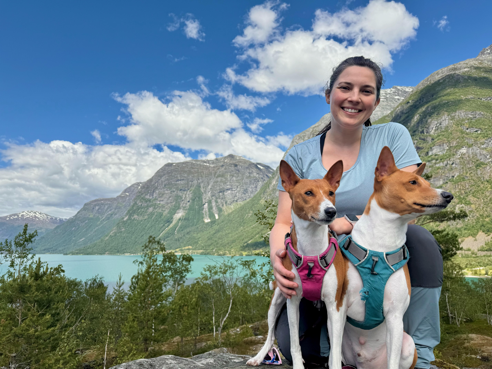

On May 25, 2023, I held my mom’s hand while she signed consent forms to enroll as the 94th patient in a clinical trial at the National Institutes of Health (NIH). We were sitting in the NIH Clinical Center, the world’s largest hospital dedicated to clinical research. Some call it the “House of Hope.” We do too.
A decade before the ink dried on those consent forms, I began my first post-college job within sight of the “House of Hope.” I was hired in a full-time research position through the NIH Intramural Postbaccalaureate Program. This is a training opportunity for recent college graduates considering graduate or professional school in healthcare and STEM fields. I worked in Building 50, the Louis Stokes Laboratories, which houses the laboratories of the National Human Genome Research Institute, one of 27 Institutes and Centers of the NIH. These Institutes compose the NIH Intramural Program, which is supported by 11% of the NIH budget and funds the nearly 6,000 scientists on the NIH main campus in Bethesda, Maryland, and other smaller NIH campuses across the US.
I spent two exciting and impactful years working in the laboratory of Dr. Francis Collins, the NIH Director at the time. With my mentors, I studied how genetic variation can lead to Type 2 Diabetes. This experience laid the groundwork for my career as a geneticist, and, unbeknownst to me at the time, it prepared me for my role as a caregiver of an NIH patient. I knew how to search ClinicalTrials.gov for treatment opportunities. I trusted her team of providers. My familiarity with the NIH and biomedical research enabled me to advocate for and support my mom during this journey.
The world’s experts on my mom’s rare disease, lymphomatoid granulomatosis (LYG), work at the National Cancer Institute of the NIH. In the summer of 2023, they gave my mom life-saving, but grueling, chemotherapy, to rid her body of the rapidly multiplying cells caused by Epstein Barr Virus (EBV). This is the virus that causes mono and lives dormant in about 90% of us. In my mom, Epstein Barr Virus is active and causing problems. Because it is a rare disease, it has taken over 30 years to enroll enough patients to really understand the way this disease works and how to treat it.

Before this clinical trial, scientific publications established the median survival for LYG as 14 months, because it wasn’t clear how to treat these patients. When she was diagnosed, this trial felt like our only hope. Her private insurance was unlikely to cover medicine not yet demonstrated to be the standard of care for LYG. Determining standard of care for a rare disease is time consuming and expensive! This is the kind of life-changing work the NIH Intramural Program supports. Led by Dr. Christopher Melani, the clinical trial successfully established a set of treatments as standard of care, publishing a median survival of 12.1 years1. This result will facilitate better treatment of LYG at hospitals across the country and globally.
Clinical trials like the one that saved my mom fall under the NIH’s Intramural Research program. Thanks to taxpayer dollars, my mom’s treatment was paid for. So was the fuel she used to drive the 7 hours to and from rural North Carolina. Budget cuts have reduced the amount she is reimbursed for her accommodations in Maryland, but this is the price we will pay for more years together. For NIH patients facing hardships, the Friends of Patients at the NIH is a charitable organization that helps with emotional, financial, and logistical support.
Fast forward to January 2025, and my mom was one treatment into her second clinical trial at the NIH. After a year in remission, her disease was back, so the doctors were trying something new. As the new Presidential administration came to Washington, Executive Orders caused communication and travel bans, as well as funding freezes at the NIH. We were incredibly concerned how new policy might affect her ability to continue treatment. As of now, her trial is running as expected. However, the NIH Intramural Postbaccalaureate Program which once employed me, and provides valuable training to the next generation of our nation’s scientists and physicians, is paused pending guidance from the Department of Health and Human Services.
As a scientist and a daughter of a rare disease warrior, the NIH Intramural Research Program has changed my life. It is my deepest wish that the NIH continues to be a model of excellence for biomedical research by treating patients, training scientists, making discoveries, stimulating the economy, and providing hope for decades to come. I hope the “House of Hope” will be there for you, too, if you one day need it.
